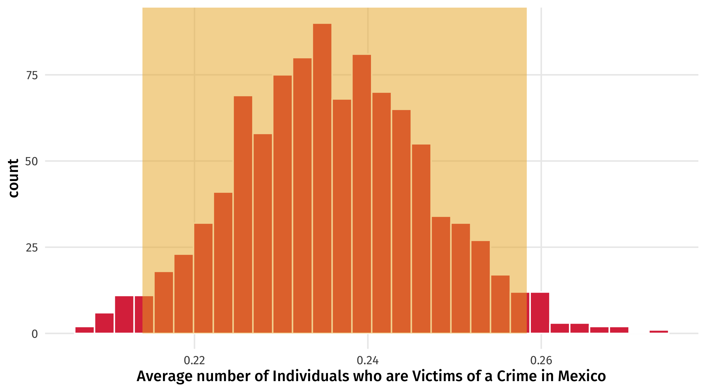
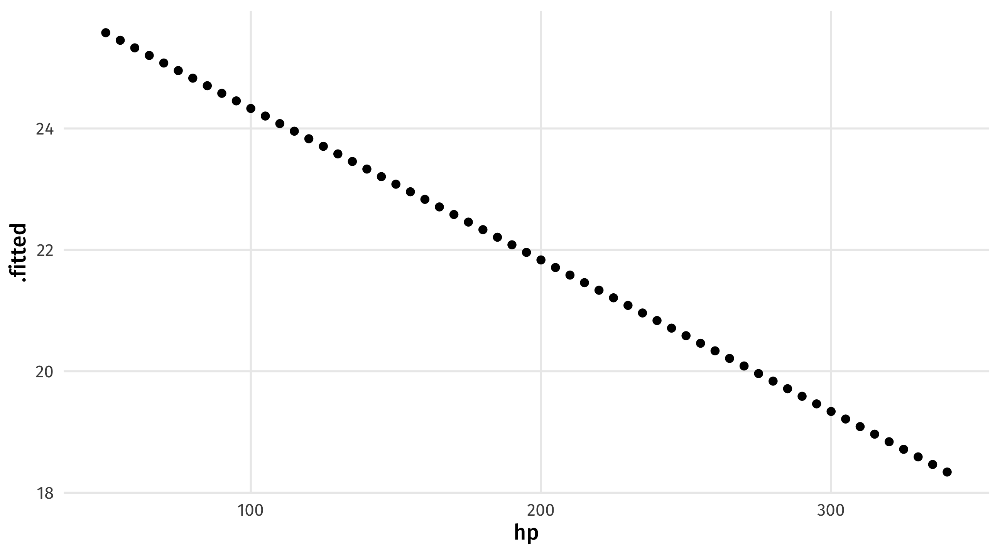

# load libraries
library(socviz)
library(juanr)
library(gapminder)
library(patchwork)
library(broom)
library(paletteer)
library(moderndive)Extra Materials: Sampling, Bootstraping, and Prediction
Sampling in R
Now imagine that instead of having data on every American, we only have a sample of 10 Americans. Why do we have a sample? Because interviewing every American is prohibitively costly. Same way a poll works: a sample to estimate American public opinion
We can pick one sample of 10 people from gss_sm using the rep_sample_n() function from moderndive:
gss_sm %>% rep_sample_n(size = 10, reps = 1)# A tibble: 10 × 33
# Groups: replicate [1]
replicate year id ballot age childs sibs degree race sex region
<int> <dbl> <dbl> <labelled> <dbl> <dbl> <lab> <fct> <fct> <fct> <fct>
1 1 2016 846 2 23 0 6 Junio… Black Fema… E. No…
2 1 2016 2601 3 30 2 3 Junio… White Fema… W. So…
3 1 2016 2156 1 29 2 6 High … White Fema… E. No…
4 1 2016 199 1 22 0 3 Junio… White Male Pacif…
5 1 2016 591 1 76 3 2 Bache… White Male W. So…
6 1 2016 775 3 57 3 4 High … Black Male South…
7 1 2016 31 2 32 0 2 High … White Male Middl…
8 1 2016 2589 3 33 2 2 High … White Fema… W. So…
9 1 2016 1221 3 55 1 5 Junio… Other Fema… Middl…
10 1 2016 301 1 23 1 7 High … Black Fema… E. No…
# ℹ 22 more variables: income16 <fct>, relig <fct>, marital <fct>, padeg <fct>,
# madeg <fct>, partyid <fct>, polviews <fct>, happy <fct>, partners <fct>,
# grass <fct>, zodiac <fct>, pres12 <labelled>, wtssall <dbl>,
# income_rc <fct>, agegrp <fct>, ageq <fct>, siblings <fct>, kids <fct>,
# religion <fct>, bigregion <fct>, partners_rc <fct>, obama <dbl>
Note
size = size of the sample; reps = number of samples
We can then calculate the average number of kids among that sample of 10 people
gss_sm %>% rep_sample_n(size = 10, reps = 1) %>%
summarise(avg_kids = mean(childs, na.rm = TRUE))# A tibble: 1 × 2
replicate avg_kids
<int> <dbl>
1 1 1.4This is our sample estimate of the population parameter.
How to simulate
If we take lots of samples of size 20 \(\rightarrow\) uncertainty in a sample of 20.
gss_sm %>%
rep_sample_n(size = 20, reps = 1000)If we take lots of samples of size 100 \(\rightarrow\) uncertainty in a sample of 100:
gss_sm %>%
rep_sample_n(size = 100, reps = 1000)So to see how uncertain we should feel about gss_sm, we should take many samples that are the same size as gss_sm:
gss_sm %>%
rep_sample_n(size = 2867, reps = 1000)
Note
nrow(DATA) tells you how many observations in data object
If we have a dataset of 2,867 observations and ask R to randomly pick 2,867 observations, we’ll just get a bunch of copies of the original dataset:
gss_sm %>%
rep_sample_n(size = nrow(gss_sm), reps = 1000)Solution: sample with replacement \(\rightarrow\) once we draw an observation it goes back into the dataset, and can be sampled again!
gss_sm %>%
rep_sample_n(size = nrow(gss_sm), reps = 1000, replace = TRUE)Sampling with and without replacement
If we were sampling 4 of these delicious fruits:
fruits = c("Mango", "Pineapple", "Banana", "Blackberry")
fruits[1] "Mango" "Pineapple" "Banana" "Blackberry"It would look like this, with and without replacement:
| Sample, no replace | Mango | Banana | Pineapple | Blackberry |
| Sample, replace | Pineapple | Pineapple | Banana | Blackberry |
Example: Polling Crime Victimization
library(juanr)
data <- crime |>
filter(pais == "Mexico")
boot_data = data |>
rep_sample_n(size = nrow(data), reps = 1000, replace = TRUE) |>
summarise(avg = mean(vic1ext, na.rm = TRUE),
standard_error = sd(vic1ext, na.rm = TRUE)) |>
mutate(low = avg - 1.96 * standard_error,
high = avg + 1.96 * standard_error)
ggplot(boot_data, aes(x = avg)) +
geom_histogram(fill = red, color = "white") +
theme_nice() +
labs(x = "Average number of Individuals who are Victims of a Crime in Mexico") +
annotate(geom = "rect",
xmin = quantile(boot_data$avg, probs = c(.025)),
xmax = quantile(boot_data$avg, probs = c(.975)),
ymin = 0, ymax = Inf,
alpha = .5, fill = yellow)
Bootstraping Regression
We can simulate uncertainty in our estimate by bootstrapping
boot_lm_kids = gss_sm %>%
rep_sample_n(size = nrow(gss_sm), reps = 1000, replace = TRUE) %>%
nest(data = -replicate) %>%
mutate(model = data %>% map(.x = ., .f = ~lm(childs ~ age, data = .x))) %>%
mutate(results = map(model, tidy)) %>%
unnest(results) %>%
ungroup() %>%
filter(term == "age")
boot_lm_kids %>%
select(`Bootstrap` = replicate, `Coefficient` = term, Estimate = estimate) %>%
slice(1:10) %>%
knitr::kable(digits = 4)| Bootstrap | Coefficient | Estimate |
|---|---|---|
| 1 | age | 0.0345 |
| 2 | age | 0.0336 |
| 3 | age | 0.0361 |
| 4 | age | 0.0319 |
| 5 | age | 0.0379 |
| 6 | age | 0.0360 |
| 7 | age | 0.0344 |
| 8 | age | 0.0339 |
| 9 | age | 0.0356 |
| 10 | age | 0.0352 |
How much might our estimate of lm(childs ~ age) vary? Look at the standard error
# A tibble: 1 × 2
mean standard_error
<dbl> <dbl>
1 0.0346 0.00165You might report it is .0345, +/- 2 standard errors
We can also look at the 95% confidence interval – we are 95% “confident” the effect of age on the number of children a person has is lm() will estimate the standard error of regression estimates for us using the statistical theory approach, but the results are similar to boostrapping
mod = lm(obama ~ sex, data = gss_sm)
tidy(mod)# A tibble: 2 × 5
term estimate std.error statistic p.value
<chr> <dbl> <dbl> <dbl> <dbl>
1 (Intercept) 0.576 0.0177 32.6 5.84e-182
2 sexFemale 0.0871 0.0234 3.72 2.06e- 4We can also ask tidy for the 95% CI:
tidy(mod, conf.int = TRUE)# A tibble: 2 × 7
term estimate std.error statistic p.value conf.low conf.high
<chr> <dbl> <dbl> <dbl> <dbl> <dbl> <dbl>
1 (Intercept) 0.576 0.0177 32.6 5.84e-182 0.541 0.611
2 sexFemale 0.0871 0.0234 3.72 2.06e- 4 0.0412 0.133conf.low and conf.high are the lower and upper bound of the 95% CI
Prediction (by hand)
weight_model = lm(mpg ~ wt, data = mtcars)The equation for model is:
\(\widehat{mpg} = 37.29 - 5.34(wt)\)
We only have one explanatory variable to work with (wt), so our scenario can only rely on weight
Scenario: a car that weights 3.25 tons \(\rightarrow\) what fuel efficiency should we expect?
To get an estimate of mpg, we simply plug in the value of “weight” we are interested in:
Estimate for weight = 3.25
\(\widehat{mpg} = 37.29 - 5.34 \times \color{red}{3.25} = 19.935\)
Prediction (in R)
First define the scenario we want a prediction for, using crossing()
weight_scenario = crossing(wt = 3.25)
weight_scenario# A tibble: 1 × 1
wt
<dbl>
1 3.25
Note
the variables in crossing have to have the same name as the variables in the model
We can then combine our scenario with our model using augment()
augment(weight_model, newdata = weight_scenario)# A tibble: 1 × 2
wt .fitted
<dbl> <dbl>
1 3.25 19.9augment takes the values for our scenario and plugs them in to our model equation to get an estimate
Note
We tell augment what our new scenario is using the newdata = argument
We can also look at multiple scenarios, maybe a light, medium, and heavy car:
weight_scenario = crossing(wt = c(1.5, 3, 5))
weight_scenario# A tibble: 3 × 1
wt
<dbl>
1 1.5
2 3
3 5 And then use augment to get the estimates:
augment(weight_model, newdata = weight_scenario)# A tibble: 3 × 2
wt .fitted
<dbl> <dbl>
1 1.5 29.3
2 3 21.3
3 5 10.6Sequence of scenarios
Or we can look at a sequence of scenarios using the seq() function
Example: estimates for every weight between 2 and 6 tons, in .1 ton increments
seq_weights = crossing(wt = seq(from = 2, to = 6, by = .1))
seq_weights# A tibble: 41 × 1
wt
<dbl>
1 2
2 2.1
3 2.2
4 2.3
5 2.4
6 2.5
7 2.6
8 2.7
9 2.8
10 2.9
# ℹ 31 more rows
Note
seq needs a starting point (from), an end point (to), and an interval (by)
And then get predictions for all these scenarios:
augment(weight_model, newdata = seq_weights)# A tibble: 41 × 2
wt .fitted
<dbl> <dbl>
1 2 26.6
2 2.1 26.1
3 2.2 25.5
4 2.3 25.0
5 2.4 24.5
6 2.5 23.9
7 2.6 23.4
8 2.7 22.9
9 2.8 22.3
10 2.9 21.8
# ℹ 31 more rowsMuiltiple Regression
big_model = lm(mpg ~ wt + cyl + hp + am, data = mtcars)
big_scenario = crossing(wt = 3, cyl = 4, hp = 120, am = 1)
augment(big_model, newdata = big_scenario)# A tibble: 1 × 5
wt cyl hp am .fitted
<dbl> <dbl> <dbl> <dbl> <dbl>
1 3 4 120 1 23.8We can use seq() to see what happens when horsepower changes while everything else is left at a fixed value
varying_hp = crossing(wt = 3, cyl = 4, am = 1, hp = seq(from = 50, to = 340, by = 5))
augment(big_model, newdata = varying_hp)# A tibble: 59 × 5
wt cyl am hp .fitted
<dbl> <dbl> <dbl> <dbl> <dbl>
1 3 4 1 50 25.6
2 3 4 1 55 25.5
3 3 4 1 60 25.3
4 3 4 1 65 25.2
5 3 4 1 70 25.1
6 3 4 1 75 25.0
7 3 4 1 80 24.8
8 3 4 1 85 24.7
9 3 4 1 90 24.6
10 3 4 1 95 24.5
# ℹ 49 more rowsVisualizing predictions
We could then store our estimate, and use it for plotting
hp_pred = augment(big_model, newdata = varying_hp)
ggplot(hp_pred, aes(x = hp, y = .fitted)) + geom_point()